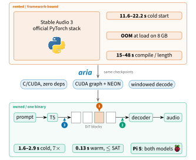
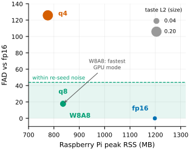
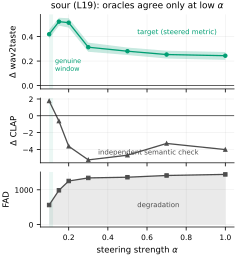
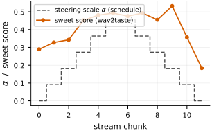

What aria is
Open-weight music models are now good enough for interactive tools and edge devices, but their reference implementations assume a Python/PyTorch stack and a discrete GPU. aria is a dependency-free runtime in about 7.7k lines of C and CUDA that runs the complete Stable Audio 3 text-to-music pipeline (tokenizer, T5Gemma text encoder, diffusion transformer, autoencoder) on ordinary GPUs, CPU-only machines and a Raspberry Pi 5.

- No framework underneath. No BLAS, no deep-learning library: a C math library and a threading runtime.
- Two backends, one op surface. Vectorized multi-threaded CPU path with 8-bit integer matmul (x86 and ARM); CUDA path with fp16 tensor cores and the denoising loop replayed as one CUDA graph.
- Quantization that saves memory. Weights from fp16 down to 8- or 4-bit; the full-precision copy is released once packed, so a lower precision replaces the footprint instead of adding to it.
- Long-form and serving. Windowed and streaming decoders with byte-identical output; a resident batch mode and an HTTP server keep the model loaded (0.60 s per job vs 1.23 s per invocation).
Listen
Every clip on this page was generated by aria from the Stable Audio 3 small-music checkpoint (8 steps, 10 s unless noted) and loudness-normalized as in the paper's evaluation.
Text to music
solo piano piece
orchestral film score cue
synthwave track
bossa nova with nylon guitar
Precision ladder: same prompt, same seed
The transformer stored at four precisions, everything else fixed (GPU, fp16 decoder). Prompt “blues shuffle with electric guitar”, seed 2, whose 4-bit change in prompt adherence sits near the median of the 72 clips in the study. Memory is the Raspberry Pi 5 peak.
fp16
q8
W8A8
q4
Sonic seasoning: steering one clip toward a taste
Music shifts perceived taste: consonant, high-pitched legato reads as sweet, dissonant low music as bitter. aria adds a taste direction (difference-in-means over 377 human-rated clips) to one transformer block while generating. Prompt “lo-fi hip hop beat”, seed 22, same noise in every clip. Δ is the change in the wav2taste score against the unsteered clip.
unsteered
sweet
sour
bitter
Not cherry-picked: this prompt and seed sit near the median taste shift on all three axes. Salty and spicy are omitted because they stay weak even inside the clean window.
Too far: over-steering
Push the strength to α = 1 and the music falls apart, yet the taste regressor still scores sour and bitter up. This is why aria's operating points are chosen with independent checks (CLAP, FAD), never with the steered metric alone.
sweet, α = 1
sour, α = 1
bitter, α = 1
Results
Runtime vs. the official PyTorch stack
| small-music | medium | |||
|---|---|---|---|---|
| 10 s clip, 8 steps, steering on | time (s) | VRAM (MB) | time (s) | VRAM (MB) |
| aria GPU, warm | 0.13 | 1395 | 0.37 | 4215 |
| SA3 GPU, warm | 0.146 | 2330 | 0.443 | 5948 |
| aria cold start | 1.6 | – | 2.9 | – |
| SA3 cold start | 11.58 | – | 22.23 | – |
| aria CPU-only (20 threads) | 2.5 | – | 9.8 | – |
RTX 3070 (8 GB) with an i9-10900KF. Warm = model already resident on both sides; cold = process spawn + weight load + one generation. The official stack's compiler recompiles for each new clip length (14.5–48.1 s), and its medium loader briefly needs ~7.1 GB, overflowing an 8 GB card.
Quantization is close to free at 8-bit

| small-music | fp16 | q8 | W8A8 | q4 |
|---|---|---|---|---|
| GPU warm (s) | 0.13 | 0.20 | 0.10 | 0.22 |
| VRAM (MB) | 1510 | 1190 | 1190 | 1128 |
| Pi 5 peak (MB) | 1198 | 836 | 836 | 776 |
| ΔCLAP (±0.004) | ref | +0.002 | −0.001 | −0.020 |
| FAD (44.0) | ref | 18.6 | 17.7 | 125.8 |
| Δtaste (0.153) | ref | 0.035 | 0.044 | 0.199 |
In brackets: the re-seed noise floor of each check. 8-bit stays inside all three; W8A8 (8-bit arithmetic on integer tensor cores) is the fastest GPU mode. 4-bit crosses every floor, but it is what puts the 1.2 B medium model on an 8 GB Pi (~200 s; 0.9 GB resident).
Steering is real, inside a narrow window

A learned taste regressor is the steering target, so it can be gamed. Every operating point is gated by three independent oracles: CLAP similarity to a taste prompt, FAD, and audio drift.
- Genuine control for sweet, sour and bitter, confirmed by CLAP and replicated on ten held-out prompts (sour: Δ +0.42, p = 2.9×10⁻¹¹).
- The metric's maximum lies inside the degradation regime. A layer scan ranked by the target alone picks the final block for the intense tastes; the oracle panel rejects it as degradation.
- Steering beats a trained LoRA under the same panel: no training, a 4–6 KB vector instead of 10.4 MB per axis, no inference overhead, and removable at α = 0 with bit-identical output.
Live steering while streaming

The model stays warm and steering lives inside the captured graph, so control can change mid-stream. Ramping sweet 0 → 0.5 → 0 across a 12-chunk stream, the per-chunk taste score tracks the schedule (Spearman ρ = 0.78, p = 0.003), lagging on the way down as each continuation inherits context. On the Raspberry Pi 5 a steered clip costs the same as an unsteered one (32.9 vs 32.8 s).
the stream in the plot
Run it
Linux: a C11 compiler, make, libm and OpenMP. Windows: build.bat with MSVC.
CUDA is optional. Full instructions in the README.
git clone https://github.com/matteospanio/aria && cd aria
make # CPU build (make cuda CUDA_ARCH=sm_86 for NVIDIA)
./download_model.sh small-music # gated on Hugging Face: accept the license first
python scripts/export_tokenizer.py models/small-music
./aria -m models/small-music -p "warm romantic piano, slow, tender" -d 15 -s 8 --seed 0 -o out.wav
./aria -m models/small-music -p "..." --precision q4 -o out.wav # 4-bit DiTCite
@misc{spanio2026quantizednativeruntimeondevice,
title = {A Quantized Native Runtime for On-Device Semantic Audio Generation},
author = {Matteo Spanio and Antonio Rodà},
year = {2026},
eprint = {2607.08526},
archivePrefix = {arXiv},
primaryClass = {cs.SD},
url = {https://arxiv.org/abs/2607.08526},
}